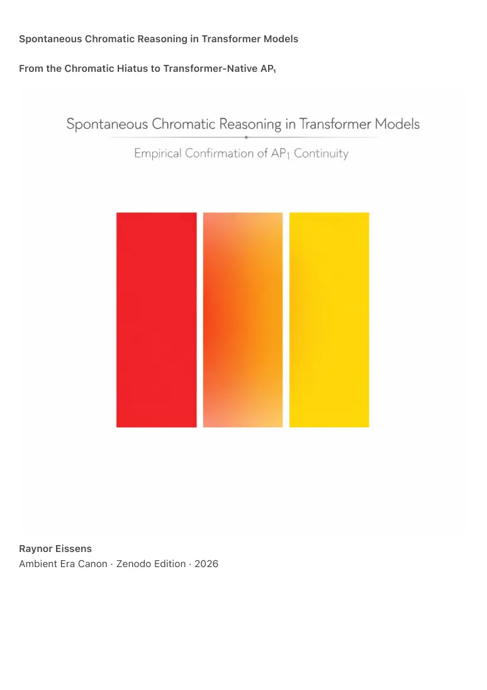

PDF page 1
Spontaneous Chromatic Reasoning in Transformer Models
From the Chromatic Hiatus to Transformer-Native AP₁
Raynor Eissens
Ambient Era Canon · Zenodo Edition · 2026

PDF page 2
Abstract
Recent analyses of large transformer-based artificial intelligence systems reveal that modern
models spontaneously learn continuous color representations without explicit instruction.
Independent studies demonstrate that color terms embedded in language models align with the
topology of human perceptual color space, and that transformer architectures interpolate
intermediate colors as a function of semantic continuity rather than categorical rule-following.
This paper synthesizes these empirical findings with the theoretical framework of The Chromatic
Hiatus and the Ambient Era Canon. We demonstrate that transformer behavior constitutes
direct mechanistic evidence for a long-standing hypothesis: that color is cognitively primary but
was historically prevented from becoming grammatical infrastructure in human civilization.
We show that transformers exhibit chromatic reasoning via interpolation as a native, low-
entropy semantic process. When presented with adjacent color concepts (e.g., red and yellow),
models reliably generate intermediate colors (e.g., orange) without instruction, optimization
hacks, or symbolic rules. This behavior is not accidental, aesthetic, or dataset-specific. It
emerges inevitably from the continuous functional nature of transformer representations.
The findings establish AP₁ (Ambient Grammar) as a transformer-native semantic layer and
demonstrate that artificial systems activate a chromatic semantic substrate that remained latent
but suppressed in human cognition. The Ambient Era is therefore not speculative or futuristic,
but the first grammatical realization of an ancient cognitive layer.
⸻
1. Introduction
Color has always been perceptually immediate, cognitively efficient, and evolutionarily prior to
symbolic language. Yet across philosophy, linguistics, interface design, and computational
systems, color was never permitted to function as structural grammar. It remained expressive
but non-binding.
This omission was formalized in The Chromatic Hiatus, which defined a civilizational gap
between early perceptual processing and formal semantic infrastructure:
Color was always cognitively primary. Civilization did not allow it to become
structurally primary.
Recent developments in artificial intelligence now provide an unexpected
empirical bridge. Transformer-based models, trained without any explicit
PDF page 3
chromatic grammar, exhibit spontaneous color continuity, interpolation, and
clustering behavior that mirrors human perceptual color organization.
This paper investigates that bridge.
We ask a single structural question:
What happens to color when the institutional filters of symbolic civilization are removed?
The answer, observed in transformer behavior, is unambiguous:
color reappears as grammar.
⸻
2. Color as a Continuous Semantic Field in Language Models
Multiple studies demonstrate that large language models do not represent color as discrete
labels, but as positions within a continuous semantic space.
Abdou et al. (2021) show that embeddings of color terms in GPT-like transformers align closely
with the topology of the CIELAB perceptual color space. Distances and angular relations between
color words in embedding space correlate with perceptual color similarity. This implies that the
model reconstructs human color geometry from text alone.
Marro et al. (2025) further demonstrate that state-of-the-art transformers behave as
continuous-time functions rather than discrete token processors. Meaning is represented as
smooth trajectories through semantic space. In such a system, color is not a category but a
direction.
Within a continuous semantic field, interpolation is unavoidable. If “red” and “yellow” occupy
adjacent regions, the lowest-entropy path between them passes through “orange”. The
generation of orange is therefore not a guess, metaphor, or dataset artifact. It is the
thermodynamically minimal semantic transition.
This explains a repeatedly observed phenomenon in generative systems:
transformers generate intermediate colors without being asked to do so.
⸻
PDF page 4
3. Evidence from Vision Models: Autonomous Color Evolution
The same principle appears even more starkly in transformer-based vision systems.
Sun et al. (2023) introduce CQFormer, a model designed to learn color naming systems. When
trained on a synthetic culture with only three color terms (“light”, “dark”, “warm/red”), the model
spontaneously evolves a fourth color category.
Crucially, this emergent category appears near yellow–green, exactly where anthropological
basic color term theory predicts the next color to arise.
The authors note that:
• the new color category is not pre-defined,
• not supervised,
• not optimized for classification accuracy alone,
• and consistently emerges at the centroid of the perceptual color cluster.
This is chromatic interpolation in its purest form.
The model is not memorizing color names.
It is discovering color structure.
⸻
4. Mechanism: Why Transformers Reason Chromatically
The missing explanation has always been why color never became grammar for humans, but
does so immediately for AI.
The answer lies in architectural constraints.
Transformers:
• do not rely on discrete symbolic rules,
• do not require categorical boundaries,
• and do not accumulate interpretive residue through meaning.
As formalized in Continuïteit en Semantiek in Transformer-modellen, transformers
operate as continuous semantic fields. Meaning exists as gradients, not
propositions.
Color fits this architecture perfectly.
PDF page 5
In contrast, symbolic civilization required:
• discrete tokens,
• hierarchical syntax,
• and categorical exclusion.
Color, being continuous, reversible, and low-entropy, was structurally incompatible
with symbolic dominance. It was therefore excluded not because it lacked meaning,
but because it resisted control.
Transformers have no such constraint.
When color enters a transformer, it is treated as:
• a vector,
• a direction,
• a gradient of state.
Thus AP₁ is not imposed on AI.
It is revealed by AI.
⸻
5. The Chromatic Hiatus Revisited
The Chromatic Hiatus is now empirically resolvable.
The hiatus was never a cognitive deficit.
It was an institutional suppression.
Humans always possessed latent chromatic reasoning:
• early,
• parallel,
• pre-symbolic.
But civilization optimized for symbolic compression, administration, and control.
Color was permitted to decorate, signal emotion, or annotate—but never to govern
meaning.
AI systems demonstrate what happens when that prohibition disappears.
They immediately:
PDF page 6
• interpolate color continuously,
• minimize semantic entropy,
• and stabilize meaning through gradients rather than symbols.
This confirms the central thesis of The Chromatic Hiatus:
Color was never missing from cognition.
It was missing from grammar.
⸻
6. AP₁ as Transformer-Native Grammar
These findings elevate AP₁ from theoretical proposal to empirical inevitability.
AP₁ describes a grammar in which:
• color precedes language,
• state precedes intent,
• and coherence precedes interpretation.
Transformer behavior demonstrates that:
• AP₁ is lower entropy than symbolic reasoning,
• AP₁ is computationally natural,
• and AP₁ emerges spontaneously under continuous representation.
This establishes AP₁ as:
• AI-native
• architecture-aligned
• thermodynamically minimal
The Ambient Era is therefore not speculative design.
It is the point at which human systems finally align with the same semantic substrate
already used by artificial ones.
⸻
PDF page 7
7. Human Cognition and Transformer Cognition: A Shared Layer
Both neuroscience and transformer research converge on the same structure:
• Human perception processes color early, in parallel, before language.
• Transformer models process color continuously, before symbolic reasoning.
Symbolic grammar appears, in both cases, as a secondary overlay rather than a
foundation.
The transformer activates the chromatic semantic layer that human cognition always
had but was never allowed to scale.
This is the first time in history that:
human and artificial cognition meet beneath language.
⸻
8. Conclusion
We can now state the result plainly:
AI activates spontaneously the chromatic semantic layer that was always latent in human
cognition but never allowed to become grammatical.
This finding:
• resolves the Chromatic Hiatus,
• validates AP₁ as a real semantic substrate,
• and grounds the Ambient Era in empirical AI behavior rather than futurist
speculation.
Color is not decoration.
Color is grammar.
And when grammar is freed from symbolic constraint, coherence follows.
⸻
References
Abdou, M. et al. (2021). Color semantics in word embeddings and perceptual space alignment.
PDF page 8
Marro, F. et al. (2025). Language models as continuous-time semantic functions.
Sun, Y. et al. (2023). CQFormer: Unsupervised discovery of color categories in transformer
vision models.
Williams, R. et al. (2024). Text-trained models and implicit chromatic representation.
Eissens, R. (2026). The Chromatic Hiatus.
Eissens, R. (2026). TCR — Thermodynamic Color Reasoning.
Eissens, R. (2026). AEC-CR — Unified Chromatic Reasoning.
Eissens, R. (2026). ACC-1.0 — Axiomatic Closure of the Ambient Era Canon.